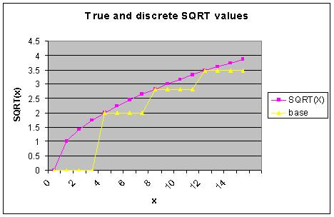

LUT
Lets say that you wanted to compute the square root of an value using
the microBlaze. If you were lucky enough to have a compiler which
provided this function you could just use the math library functions.
If on the other hand, you did not have the use of such a library, you
would have to figure out a way to compute the square root.
There are a lot of ways that you could compute the SQRT function. You
could crack open a math book and find an analytic expression which would
produce a value for the SQRT function. Unfortunately, this approach
often leads to timely computations. Another approach would be to enumerate
every possible value of x and its square root. We could then
look-up a SQRT in the table, by going to the row corresponding to
x and retrieving its value. This approach seems silly
because it would use a lot of space. If we reduced the size of the table
by eliminating some of the entries then we would save space at the expense
of introducing error - if you wanted the SQRT for x and its entry was
not in the table then you would have to use the closest x in the table.
A good compromise among all three of these design constraints (space,
time, and error) is to use interpolation in a partial look-up table (LUT).
"Interpolation is a mathematical method of creating missing data. ...
There are many methods of interpolation, but one simple method would be
to generate a new value by using the average of the value of the two values
on either side of the one to be created." This average is also referred
to as linear interpolation. For example if you have a value of x which
is 1/2 way between 0 and 4 then you
assume that the SQRT is 1/2
between 0 and 2.
We know that if f(x)=y and f(x+4)=z then
we estimate the intermediate values of f(x+1), f(x+2), and f(x+3)
by drawing a straight line between y and z and using the points
on this line to estimate the function between x and x+4. For
example, let: F(8)=2.8284 and F(12)=3.4641 then
- F(9) = 2.8284 + 1/4(3.4641-2.8284) = 2.987
- F(10) = 2.8284 + 2/4(3.4641-2.8284) = 3.146
- F(11) = 2.8284 + 3/4(3.4641-2.8284) = 3.305
We understand that this is an approximation and consequently we will
have error, but sometimes close is better than exact in embedded
computing especially when time is of the essence.
//----------------------------------------------
// A code chunk to perform linear
// interpolation of some unknown fnc at
// x+i where i is between 0 and 4
// inclusive. You are given that
// f(x)=y f(x+4)=z
// You are given i, please return f(x+i)
//----------------------------------------------
delta = (z-y)>>2;
f = y + delta*i;
It would be better to do the division by 4 (shift right by 2-bits)
after the multiplication of delta*i because the difference (z-y)
might be small and the division may result in a 0 value.
Now lets examine how to determine a square root.
The purple curve in the graph below shows the true value of the SQRT
function for the integers 0-15. If we have a table with 16 rows we
could store these values and generate really good values for the SQRT
function. This approach becomes infeasible as we seek to make the
table larger. The yellow curve in the graph below represents the values
of the SQRT function for 4 equally spaced values. These values are
given in the table to the left of the graph.
| x | sqrt(x) | 2.6 fixed point
| | 0 | 0 | 0x00
| | 4 | 2 | 0x80
| | 8 | 2.828427125 | 0xB5
| | 12 | 3.464101615 | 0xDE
| | 16 | 4 | 0xFF
|
| 
|
If we stopped here then our values for the SQRT would be very coarse.
For example if you wanted the SQRT(1), the closest value in our table
would be 0. Now that's a really bad approximation, but an approximation
none-the-less.
Lets consider how to use interpolation to find a better value for the
SQRT(9). Clearly, the SQRT will be between SQRT(8) and SQRT(12). How
much between? Well 1/4 of the way because 9 is a 1/4 of the way between
9 and 12. Have the class write an equation describing SQRT(9) in
terms of SQRT(12) and SQRT(8).
SQRT(9) = SQRT(8) + 1/4*(SQRT(12)-SQRT(8))
Now write the equation replacing the 1/4 by a statement using 9,8, and 12.
SQRT(9) = SQRT(8) + (9-8)/(12-8)*(SQRT(12)-SQRT(8))
Now divide the class into 16 sections and have them compute all the
values of SQRT for 0-15. Compare these to the excel spreadsheet
(4pt SQRT tab). In this spreadsheet, I've broken the computation
down so that you can see what the individual parts are doing.
- base - this is the SQRT(8) term in the equation above.
It represents the base value from which we will interpolate.
- offset - this is the (9-8)/(12-8) term in the equation above.
It represents how much offset you are into the interval.
- delta - this is the SQRT(12)-SQRT(8) term in the equation
above. Its how much range the function covers between the two
values in the LUT.
- base + offset*delta - this is the value of the SQRT function
for the input given in the "x" column.
- error(x) - this is the absolute values of the difference between
the linear interpolation value and the true value of the SQRT function.
Now we have to write a function to do this.
//----------------------------------------------
// Fnc SQRT
// In A 4-bit integer
// Out An approximate SQRT
// Pur This function computes a linearly
// interpolated value for the SQRT
// function. There are some significant
// data type issues that will have to
// be resolved - note the use of "type"
// in the function is a place-holder.
//----------------------------------------------
fixed SQRT(int4 x) {
fixed lut[5] = {0, 2, 2.828427125, 3.464101615, 4};
int8 index;
fixed base;
index = x >> 2; // We are looking at sets of 4 points
base = lut[index]; // Get the base value to start interpolation
offset = (x & 0x03)>>2; // The proportion into the interval - PROBLEM
delta = lut[x+1] - lut[x]; // The difference between consecutive SQRTs
return(base + offset*delta);
} // end SQRT
Data Type
Lets ponder the data type of the SQRT type. The input argument
could be a 4-bit value. The output is a number between 0.0 and 4.0
and include some fractional part. Since 8-bit values are the norm
with many micro-controllers, it makes sense to make the output an 8-bit value, but
where to stick the decimal point? It makes sense to place the
decimal at the 6th bit. Now it remains to write the SQRT code
for this representation.
//----------------------------------------------
// Fnc SQRT
// In A 4-bit integer
// Out An approximate SQRT
// 8-bit fixed point with decimal at 6th bit.
// Pur This function computes a linearly
// interpolated value for the SQRT. The
// 5th entry in the lut is an approximation
// to 4.
//----------------------------------------------
int8 SQRT(int8 x) {
int8 lut[5] = {0x00, 0x40, 0x75, 0xDD, 0xFF};
int8 index;
fixed base;
index = x >> 2;
base = lut[index];
offset = (x & 0x03)
delta = lut[index+1] - lut[index];
return(base + offset*delta)>>2;
} // end SQRT